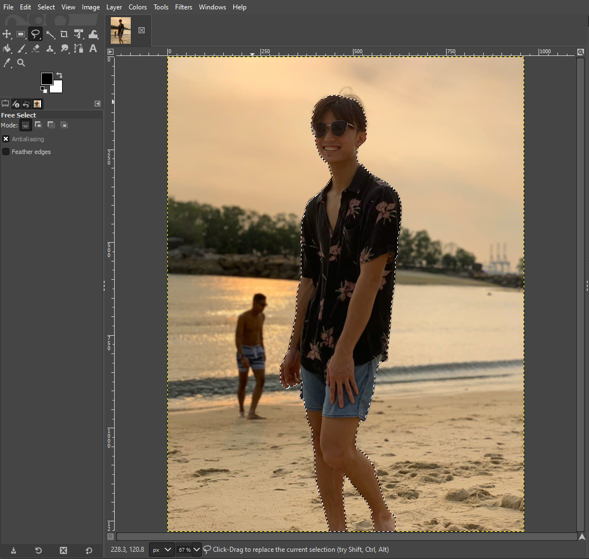
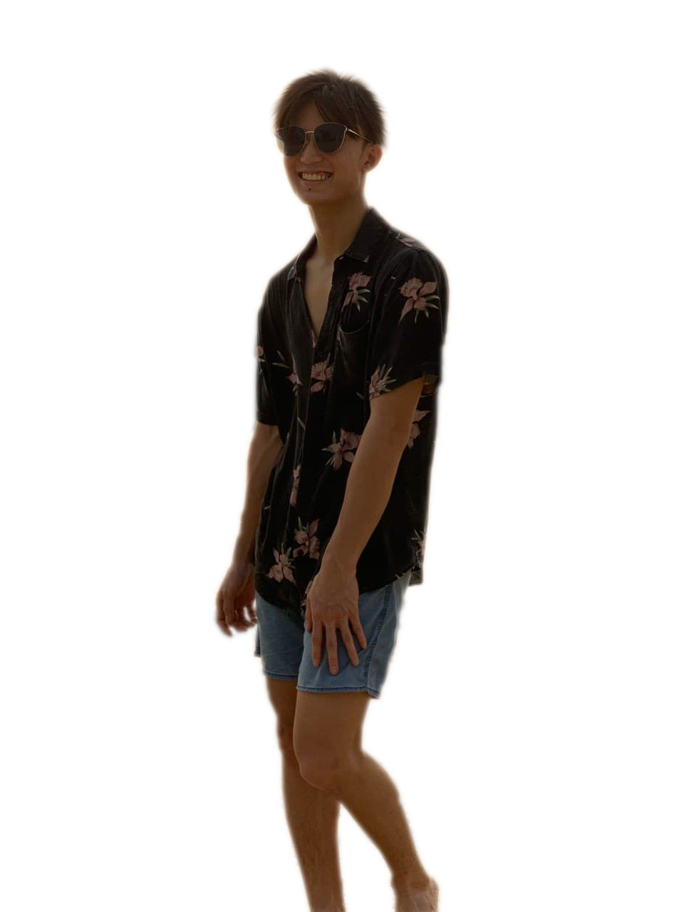
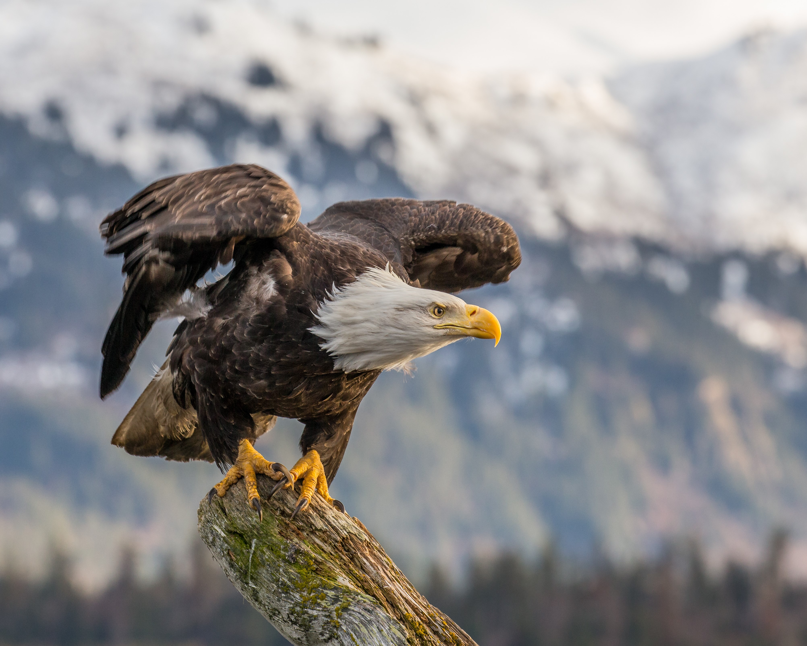

Raster and Vector Graphics
Computer graphics can be categorise into 2 categories; Raster graphics and Vector graphics. Raster deals with the pixel on the screen and uses photograph and images similar to photoshop. Whereas, Vector on the other hand uses mathematical functions and are characterised by clean lines.
Raster Graphics
GIMP Tutorial Video:
First, I will choose a selfie that I will be editing:
| I will then remove the background using GIMP with the help of the tutorial video: | Selfie with the background removed: |
|  |  |
| Now I will be substituting the background with a seaside scene: | Lastly, I will be resizing the image to a width of 1024 pixels |
 |
Finally, I will use the new edited photo for my selife under my about page.
Vector Graphics
InkScape Tutorial Video:
| First, I chose an image of an animal: | Then I simply trace the outline of the eagle to form a vector art by following the tutorial video: |
|  |  |
I created my vector art using only B/W colours and added a light grey circle background to help contrast the eagle while helping to match with the rest of my website.
Finally I exported the Vector Graphic as .png and used it as a logo for my website.